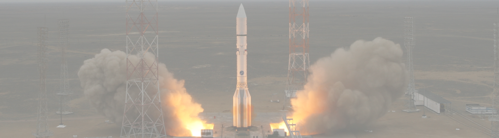
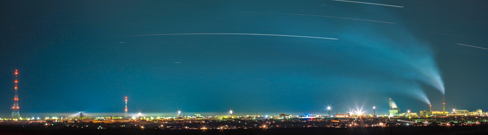
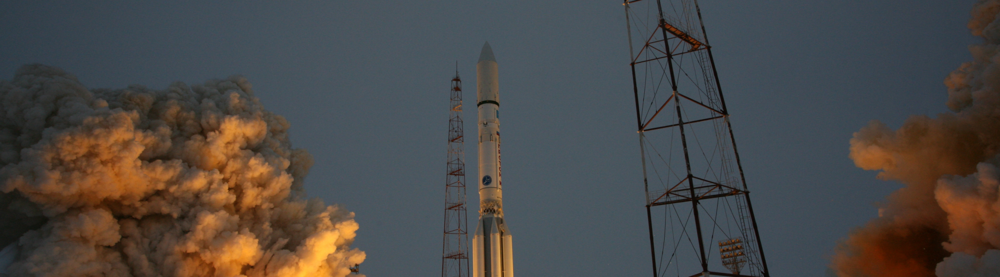
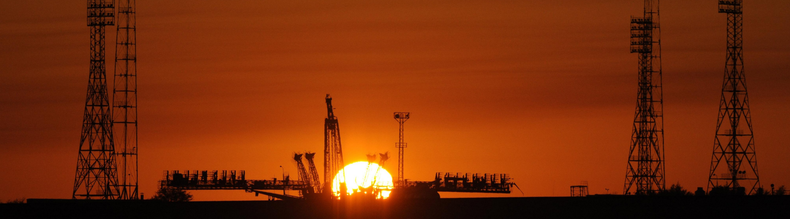

.png) 

«Восток-1» - 12 апреля 1961 г. (время в космосе – 108 минут)
Юрий Гагарин
«Восток-2» - 6-7 августа 1961 г. (время в космосе – 1518 минут)
Герман Титов
1 полёт - 5622 минут (около 4 суток) Восток - 3; 2 полёт около 25920 минут (18 суток) Восток 4
Андриян Николаев
1 полёт – 4257 минут (около 3 суток) Восток - 3; 2 полёт – 17 часов 30 минут (15 суток) Восток - 4
Павел Попович
3 полёта общей продолжительностью 20 суток 17 часов 48 минут Восток - 5
Валерий Быковский
Восток - 6 (время в космосе – 2 суток 22 часа 51 минута)
Валентина Терешкова
Восход - 1 время в космосе 24 часа 17 минут
Константин Феоктистов
(время в космосе 24 часа 17 минут)
Борис Егоров
Восход - 2 (время в космосе: 26 часов 2 минуты)
Павел Беляев
(время в космосе – 1 полёт: 26 часов 2 минуты; 2 полет: 5 суток 22 часа 30 минут)
Алексей Леонов
 ВОСХОД
ВОСХОД
 СОЮЗ
СОЮЗ

КОСМОДРОМ “БАЙКОНУР”
Космодром Байконур — первый и крупнейший в мире космодром, расположен на территории Казахстана между городом Казалинск и поселком Джусалы, вблизи поселка Тюратам. Территория космодрома Байконур составляет 6717 км². Космодром Байконур и город с одноименным названием вместе образуют комплекс «Байконур», арендованный Россией у Казахстана на период до 2050 года. С 4 октября 1957 года по 31 марта 2024 года с космодрома Байконур выполнены 1 540 орбитальных пусков ракет-носителей, на околоземные орбиты и отлетные траектории выведены 1 999 космических аппаратов. Сегодня космодром Байконур — это основная космическая гавань нашей страны, открывшая миру путь к научно-техническому прогрессу, а человечеству — дорогу в космос. Именно с этого космодрома был запущен первый Спутник, провозгласивший о начале космической эры. С Байконура в первый в истории человечества полет в космос отправился Юрий Гагарин. С этого космодрома стартовали ракеты-носители доставлявшие в космос корабли с Германом Титовым, Валентиной Терешковой, Алексеем Леоновым, Светланой Савицкой и другими космическими героями нашей страны.
КОСМОДРОМ “БАЙКОНУР”
- Байконур — самый крупный космодром в мире
- Байконур — общая площадь комплекса космодрома: 6717 км2
- Байконур — более 10 тысяч сотрудников
- Байконур — 31-я площадка предназначена для ракет-носителей, которые выводят в космос грузовые «Прогрессы» и пилотируемые «Союзы»
- Байконур — дружба России и Казахстана
- Байконур — международное сотрудничество
КОСМОДРОМ “БАЙКОНУР”
Проект строительства «Научно-исследовательского испытательного полигона № 5» (НИИП-5) был утвержден 2 июня 1955 года. Космодром Байконур создавался трудом сотен тысяч. Столица космодрома Байконур — город Байконур начал строиться одновременно с возведением важнейших специальных объектов полигона с 1955 года, как поселок для испытателей. Генеральный план застройки города очень похож на планы других крупных военных городков того времени. Место расположения жилых домов, культурно-просветительных учреждений, спортивная и медицинская зоны обозначались, как «площадка № 10». Генеральным подрядчиком строительства полигона и города было определено 130-е управление инженерных работ, коллектив которого тогда возглавлял инженер-полковник Георгий Максимович Шубников, в последующем ставший генерал-майором инженерно-технической службы.
КОСМОДРОМ “БАЙКОНУР”
УЧЁНЫЕ

Сергей Королёв
Константин Циолковский
Николай Кибальчич
Фридрих Цандер


.png)
.png)
.png)


АРХИВ ВИДЕО
АВТОР ПРОЕКТА ОЛЕСЯ ФЕТИЩЕВА при поддержке Санкт-Петербургского государственного университета
в рамках подготовки выпускной квалификационной работы
куратор проекта Елена Малиновская
elleis27@yandex.ru связь с автором